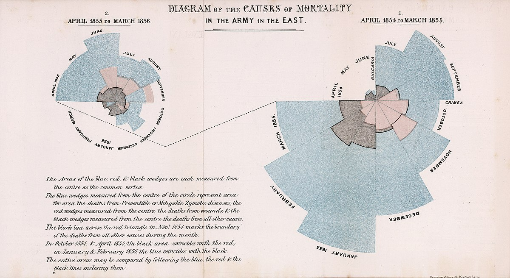
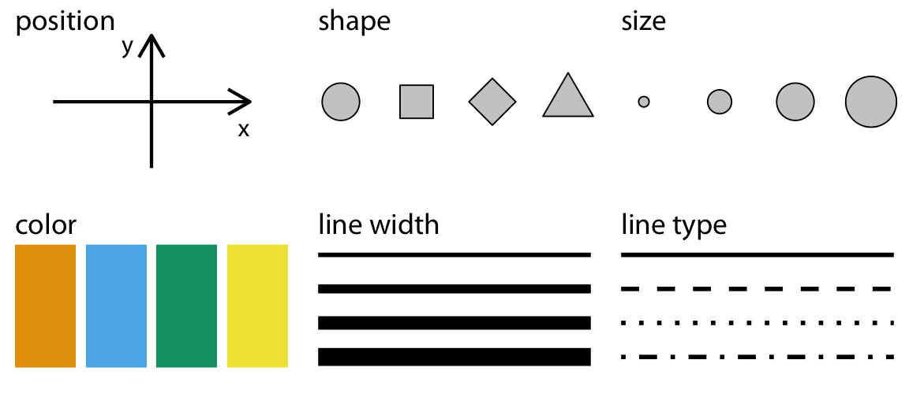
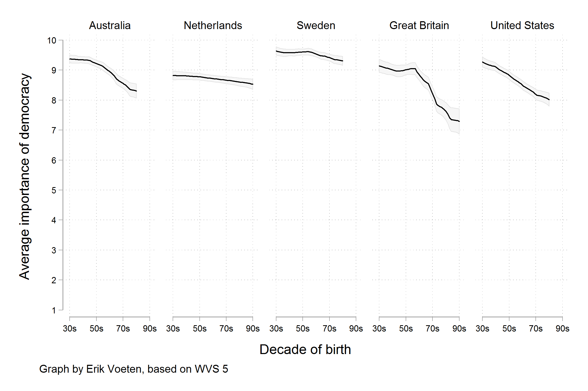

Data Storytelling
Introduction
Visualization is a key part of the data analysis workflow. Not only does it help us explore our data and analysis results, but it also serves as the primary tool for sharing our findings with others. Whether we’re presenting our work in an academic paper, journalistic article, or a presentation to colleagues, graphs are essential to attract their attention and making our work interesting. This is why it is important to learn how to make graphs that display information in an effective but also aesthetically pleasing way. In this lecture, we will address these topics.

Some history
While data visualization has become easier and more accessible over the last years thanks to statistical software, it is not a discipline that was born in the last couple of years. Using graphs to convey relevant information is something that has been done for centuries. One notable example is the map created by John Snow in 1854, which plotted illness-related deaths during London’s cholera pandemic. By using lines to represent each death, he was able to prove that the disease was not spread through the air, but through polluted water from a specific pump on Broad Street. This shows how effective and impactful data visualization can be when used correctly.
Another example are the infographics done by the sociologist W.E.B. Du Bois and his team in the Exposition Universelle, the Paris World Fair of 1900. Here, the authors used a variant of the classic pie chart to showcase the representation of black and white people in different occupations, comparing the state level of Georgia and the total of the country. It is notorious here how in the southern state there was still the heritage of institutionalized racism, where black people were overrepresented in the sector of domestic and personal service.
Finally, we have this polar graph done by the famous Florence Nightingale that dates back to 1858. This plot indicates the annual rate of mortality per 1,000 in each month that occurred from preventable diseases (in blue), those that were the results of wounds (in red), and those due to other causes (in black). It is notorious how many more soldiers died from preventable diseases rather than by being wounded in battle.

These three cases are good examples of the historical use of data visualization to display quantitative information. The three authors use aesthetical attributes in order to show numerical values, categories, and locations.
However, as social scientists, it’s important to note that they also employed infographics to capture the attention of a wider audience and present evidence on specific topics. Snow’s maps, for instance, demonstrated how cholera could be prevented through better water sanitation, while Dubois and his team illustrated the lingering effects of slavery in Georgia compared to the rest of the United States. Nightingale’s work, on the other hand, revealed how mortality rates could be reduced through improved sanitation. Overall, data visualization serves as a Trojan Horse to highlight crucial, data-based information.
Grammar of graphics
Doing a good graphic involves data and creativity. However, there are certain common elements behind the creation of a graph that we can sum up as the grammar of graphics Wickham (2010). Graphics are constructed by combining independent components, such as data, aesthetics, geometries, and scales.
The package we will be using to make plots in R is called ggplot2, and its syntax is based on this grammar of graphics. In ggplot2, a plot is constructed by starting with a layer of data, and then adding additional layers to specify the aesthetics (e.g., color, shape, size) of the plot, the type of geometry (e.g., point, line, bar) to use to display the data, and the scale (e.g., linear, log, discrete) to use for each aesthetic. Each of these components can be modified and customized in a variety of ways to create complex and informative visualizations.

This process of assigning data variables to the visual properties of a plot is called mapping of aesthetic attributes. In other words, it is the way to show in a visually perceptible way the difference between values. Aesthetics refer to visual properties such as color, shape, size, transparency, and position that can be used to visually represent data.

The grammar of graphics approach allows users to create a wide range of plots, from basic scatter plots and histograms to complex multi-layered visualizations, using a consistent and intuitive syntax. It is a powerful tool for data exploration and communication and has become a popular approach for data visualization in the R community.
Types of graphs
We can group plots into various clusters according to the kind of data we want to show. We will often be interested in showing the magnitude of numbers: the total number of people living in different countries, the mean salary for different groups of populations. These cases have a set of categorical values (such as countries, or demographic groups) and a quantitative value for each category. This is the same as saying we are going to show amounts (Wilke (n.d.b)). The most common graph to showcase amounts are bar plots. For example, we can display the countries with lowest life expectancy in the year 2007.
Each bar represents a categorical variable, and the length represents the quantitative value. Bars can be arranged either vertically or horizontally. By convention, when there are not many categories, vertical bars are the best option. But when one is working with many categories, the names on the horizontal axis might overlap, so displaying the values in the y axis is a better idea. Take a look at how the life expectancy ages in 2007 for the Americas would look like in a vertical axis…
and in a horizontal one.
Bar plots tend to be the most common kind of visualization due to their effectiveness. Pretty much anyone can interpret them, and simple, easy-to-understand graphs are a key of data visualization. However, reusing them over and over in the same document might be repetitive and lose a reader’s attention, so it is also good to keep in mind other alternatives. For example, dot plots provide a cleaner graph by only showing a point where the bar would end, removing the “insides” of the bars. This minimalist approach is often considered synonymous with a good plot in the data visualization community. Expanding our knowledge of different types of graphs and their uses can keep things interesting and enhance the clarity of our data representation.

So far, we have seen examples showing values for individual groups. However, in other cases we might be interested in showing how some group, entity, or amount breaks down into individual pieces that each represent a proportion of the whole. Common examples include the percentage of races in a group of people (45% of the population in this neighborhood is black, 40% is white, 10% is latinx and 5% is asian) or the percentages of people voting for different political parties in an election (60% of the population voted for X candidate, while 40% voted for candidate Y).
The archetypal visualization for this kind of information is the pie chart, where each group is displayed as colored areas inside of a circle. However, over time, this graph has gained quite a negative reputation. While it is very popular, it has been shown that the human eye understands proportions more easily when they are displayed vertically. Take a look at the proportion of people in each continent represented within the world’s total population in 2007, in a pie chart…
or in a stacked bar chart.

The stacked bar chart shows more clearly the weight each continent has on the total population of the world, and allows us to see a small line representing Oceania, which wasn’t visible in the bar chart.
Visualizing proportions can be challenging, specially when the whole is broken into many different pieces. That is to say, when we want to see the values for sub-groups inside of our groups. And this is specially useful when we want to control how a variable changes by different groups. For example, we could be interested in the amount of countries that have a high or a low life expectancy across continents. This could be done in a stacked bar chart:

Stacked bar charts are useful for showing absolute values within the larger groups. It is clear from this graph that Africa has the most countries, but also that the majority of them have a low life expectancy. Another option to show this information would be a dodged bar chart, where the subgroup bars are positioned next to each other rather that on top.

In this case, there is no clear answer to which kind of plot is better! Data visualization is a field where scientists should explore and try out different options to decide which one suits the case better.
So far, we have worked with the simplest kind of visualizations: counts or proportions. However, as we dive into the analysis, we might be interested in checking out how a particular variable is distributed in a dataset. That is to say, how the variable is spread: which values are more common and less common, which are extreme values, and so on.
The most common visualization to show distributions is the histogram, which in practice is a variant of… the bar plot!
The histogram shows the range of values (from the minimum to the maximum that they reach), and how often they are observed in each range.
One thing to note about histograms is that their appearance (and therefore the message they convey) can change depending on the number of intervals used. The previous plot had divided the range of values into 30 ‘bins’ or equal intervals (e.g. ‘0-10’, ‘10-20’, etc.) and counts how many observations fall into each one. We can increase the level of detail in the histogram by increasing the number of intervals, at the cost of losing generalization. Conversely, if we reduce the number of intervals, we show a more summarized distribution of the data, at the cost of losing detail.

Another option to plot distributions are density graphs. Density plots are direct descendants of histograms. But instead of counts of observations per range of values, they show the probability distribution of the variable, i.e. how likely it is to find a particular value if we randomly selected one of the observations. Unlike histograms, which have been in use for a couple of centuries because they are relatively easy to create by hand, the (previously) laborious density plots have become popular with the advent of software and computers capable of creating them instantly.
The results of density plots are interpreted similarly to those of a histogram: we notice the range of the data and how common they are in one range compared to another.
Finally, we can plot distributions as boxplots (also called box and whisker plot). It displays a summary of the minimum, first quartile, median, third quartile, and maximum values of the data. First, let’s take a look at the following boxplot that displays the GDP per capita across continents in 2007.

This type of graphic contains a lot of information.
The box in the middle represents the middle 50% of the data, with the lower edge representing the first quartile (25th percentile) and the upper edge representing the third quartile (75th percentile).
The line inside the box represents the median.
The whiskers extending from the box show the range of the data, typically defined as 1.5 times the interquartile range (IQR), which is the distance between the first and third quartiles.
Outliers, which are data points that fall outside the whiskers, are shown as individual points.
Finally, we could be interested in showing the relationship between variables (x-y). The most common way to show this is through scatterplots.

Mapping more aesthetic attributes
So far, we mostly saw how data can be mapped into an x and y axis. However, we mentioned we can also map data as shapes, sizes and colors. We briefly saw how color can be introduced to show categorical variables when we are seeing proportions of the data. However, it can also be used as a continuous variable.

This graph shows that there is a relationship between longevity and GDP: countries with higher life expectancy are found at the top of the graph. As we continue to explore this relationship in the following plots, note that we also introduced a transformation on the X axis. We can see that the values in the scale go from 1,000,0000 to 10,000,000, and then to 100,000,000 until 1,000,000,000. This is called a logaritmic scale: the values are no longer evenly spaced, they increase exponentially. This is specially useful when we are working with data with a wide range of values, such as populations or income. For example, let’s introduce the variable continent into our ‘Wealth and health’ graph with a logarithmic scale in the GDP variable.

This returns us a more clear and compact graph, where we can better see the variability in the lower values for both variables, and relate them mostly to Africa.
We could also show the continents as shapes:

However, the color tends to be a better option to plot categorical data. We could also introduce more data into the plot through the size of the dots or shapes.
While we might get excited about the possibilities of creatively mapping data as a visual image, we should remember that just because we can use many resources we shouldn’t use all of them at the same time. A data visualization expert, Tufte (2001), has outlined several principles for creating effective and clear visualizations. Tufte’s principles emphasize the importance of clarity, simplicity, and precision in creating effective and informative graphs. His key principles are:
Show the data: The data should be the primary focus of the graph, and any extraneous elements should be minimized.
Maximize the data-ink ratio: The amount of ink used to represent the data should be maximized, while any unnecessary ink, such as gridlines, should be minimized.
Use small multiples: Rather than cramming all the data into one graph, consider breaking it down into smaller graphs with a common scale and format to allow for easier comparison.
Use clear and detailed labels: Labels should be easy to read and provide sufficient detail to help the viewer understand the data.
Avoid chartjunk: Avoid adding decorative or unnecessary elements that do not contribute to understanding the data.
Use a high data resolution: The graph should use a high enough resolution to show the details of the data clearly.
Use a relevant scale: Choose a scale that is appropriate for the data being presented, and ensure that it is clearly labeled.
We recommend following these principles to make a clear, effective visualization.
Discussion
The design of a graph should always be based on the data and focused on the topic we are researching. However, we should always be careful about not lying with graphs. That is to say, it is important to not toy with our graph to show only information that reinforces our hypothesis or what we want the data to say. Kieran (2018) explains this with a clear example from the New York Times. In November 2016, this newspaper reported some research on peoples’ confidence in the institutions of democracy. The headline in the Times ran “How Stable Are Democracies? ‘Warning Signs Are Flashing Red’”, and the graph accompanying the article certainly seemed to show an alarming decline.

The graph was widely circulated on social media. However, this is an example on how one can lie with data. This plot presumable shows the the percentage of respondents who said “Yes”, presumably in contrast to those who said “No”. However, the survey asked respondants to rate the importance of living in a democracy on a ten point scale. The graph showed the difference across ages of people who had given of “10” (Absolutely important) only, not changes in the average score on the question. As it turns out, while there is some variation by year of birth, most people in these countries tend to rate the importance of living in a democracy very highly, even if they do not all score it as “Absolutely Important”. The political scientist Erik Voeten redrew the figure based using the average response.

While we still see a decline in the average score by age cohort, on the order of between half a point to one and a half points on a ten point scale, it is not such a drastic decline as the one showed originally.
References
Kieran, Healy. 2018. Data Visualization. https://press.princeton.edu/books/hardcover/9780691181615/data-visualization.
Tufte, Edward R. 2001. The Visual Display of Quantitative Information, 2nd Ed. Cheshire, Conn.
Wickham, Hadley. 2010. “A Layered Grammar of Graphics.” Journal of Computational and Graphical Statistics 19 (1): 3–28. https://doi.org/10.1198/jcgs.2009.07098.
Wilke, Claus O. n.d.a. Fundamentals of Data Visualization. Accessed May 8, 2023. https://clauswilke.com/dataviz/aesthetic-mapping.html.
———. n.d.b. Fundamentals of Data Visualization. https://clauswilke.com/dataviz/aesthetic-mapping.html.
Wilkinson, Leland. 2005. The Grammar of Graphics. Statistics and Computing. New York: Springer-Verlag. https://doi.org/10.1007/0-387-28695-0.